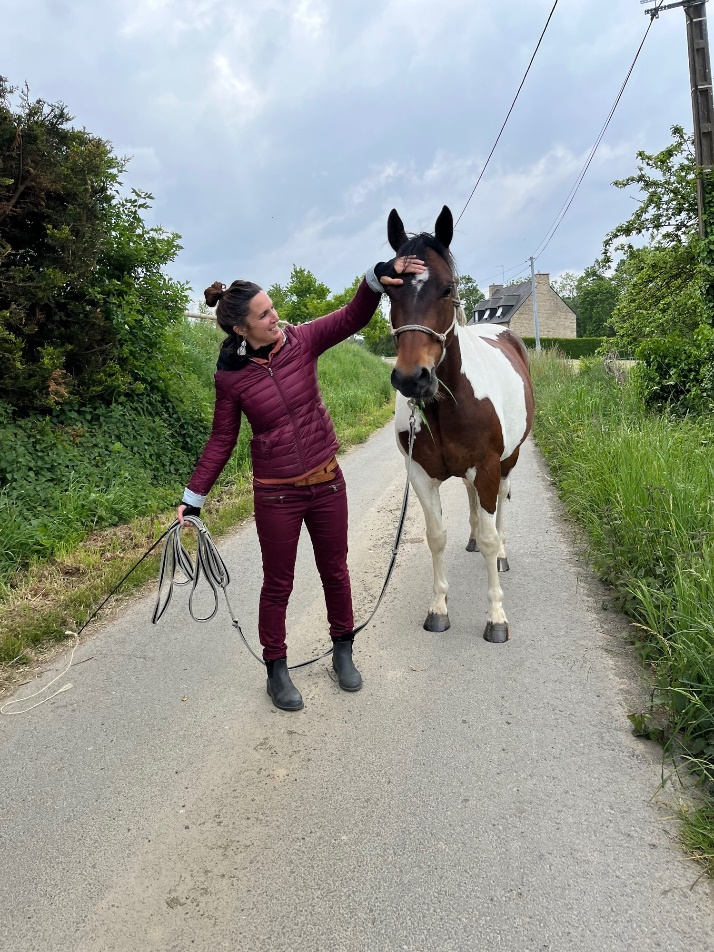

Contact et Adresse
Ce qui vous amène
Pour qui ?
Adultes, adolescents.
Pourquoi ?
Une souffrance liée à : Un état d’anxiétéDes ruminations
Un manque de confiance en soi
Un Trouble psychique ou une neuroatypie
Un deuil
Des difficultés dans les relations aux autres
Une crise dans le couple
Une rupture
Des conflits familiaux
Des idées noires
Des insomnies régulières
« Celui qui regarde à l’extérieur rêve. Celui qui regarde à l’intérieur s’éveille. »- C.G.Jung
Mon approche : psychothérapie d'orientation analytique
Psychopraticienne d'orientation analytique
J'accompagne des personnes traversant des difficultés psychiques passagères ou chroniques. Qu'il s'agisse d'un motif précis (deuil, addiction, phobie, traumatisme) ou d'un mal-être plus diffus, j'aide le patient à examiner son histoire passée afin qu'il comprenne l'origine de sa souffrance et qu'il puisse ainsi accéder à un mieux être. Au fil des séances, j'accompagne le patient dans la mise en lumière (par la voie du rêve parfois), des schémas inconscients qui se répètent et qui le font souffrir, afin qu'il puisse s'en détacher et libérer des émotions enfouies. En fonction de ce que ce dernier vient déposer en cabinet, j' amène des pistes de réflexion afin qu'il puisse comprendre son propre fonctionnement. Je m'adpate au rythme et à la singularité de chacun. Pour certains, quelques séances suffisent, pour d'autres, un travail au long cours est nécessaie.
Le Psychologue
Etudes universitaires de psychologie avec stages sur le terrain et validées par un Master 2. Bases solides en Psychopathologie, ce qui lui permet de connaître et repérer les différents troubles mentaux des moins graves aux plus graves et de savoir travailler en lien avec les médecins, généralistes, psychiatres, dermatologues, gynécologues, gastro-entérologues, chirurgiens plastiques, etc…
Le Psychiatre
Etudes de médecine puis une spécialisation en psychiatrie. En tant que médecin, il est le seul professionnel de santé à être habilité à prescrire des médicaments en cas de besoin et à être conventionné par la Sécurité Sociale. Il pratique l’entretien clinique et interroge le patient au sujet de son symptôme.
Psychologues et psychiatres sont psychothérapeutes sans avoir à solliciter ce titre auprès de l'ARS.Le Psychanalyste
Formation complémentaire à celle de Psychologue ou Psychiatre ou ni l’un ni l’autre. En principe il a suivi lui-même une psychanalyse approfondie et une formation sérieuse dans une association de psychanalyse mais il n'existe pas de titre protégé de psychanalyste qui garantisse que la personne ait la formation et la compétence requise. Ses bases théoriques sont celles développées par Freud et les post-freudiens. Tout en exerçant comme Psychanalyste il continue à se former, à se remettre en question, à faire de la recherche et à travailler avec ses pairs.
Le Psychothérapeute
Etudes de Psychologie ou de Médecine Psychiatrie. Ou pas d’études. Utilise des techniques diverses et variées selon sa formation de base (TCC, analyse transactionnelle, PNL, EMDR, hypnose, Gestalt). En principe il a expérimenté pour lui-même la psychothérapie qu’il propose et s’est formé dans une association. Son titre est protégé depuis le décret 2012-695 du 7 mai 2012 modifiant le décret 2010-534 du 20 mai 2010 : être reconnu officiellement psychothérapeute suppose un certain nombre de conditions définies pas ces décrets.
Qui suis-je ?
Psychopraticienne certifiée de l’E-faculté de
psychologie et de Psychanalyse d’Aix en Provence, spécialisée dans
l’accompagnement des adolescents et des adultes.
J'accompagne les personnes qui traversent une période difficile,celles qui souhaitent se
comprendre davantage ou encore celles qui souhaitent trouver un équilibre intérieur.
https://www.efpp-e-learning.com/
Equithérapie
Pour les personnes moins à l’aise avec la parole, je propose également des séances de cheval miroir: une forme de thérapie qui permet le déblocage émotionnel, le travail sur la relation à l'autre, l’estime et la connaissance de soi, mais aussi la confiance en soi et ce, grâce à l’attitude du cheval, garant, par son authenticité, sa finesse et son discernement, du reflet des contenus psychiques du patient. Ma posture de thérapeute a ici pour but d’accompagner ce dernier dans l’interprétation des signaux que le cheval lui communique. Cette forme de thérapie exigeant d’être dans l’ici et maintenant s’adresse également aux personnes souffrant de trouble de l’attention avec ou sans hyper activité et peut par ailleurs se révéler efficace auprès de patients souffrant de troubles du spectre autistique. Les séances se déroulent uniquement à pied à côté du cheval ou en liberté dans un carré en sable prévu à cet effet.
« Le bonheur est un rêve d’enfant réalisé à l’âge adulte. »- S.Freud
Tarification
Face à face en cabinet: 50€ pour une séance de 45 minutes.
Equithérapie: 60€ pour une séance de 45 minutes